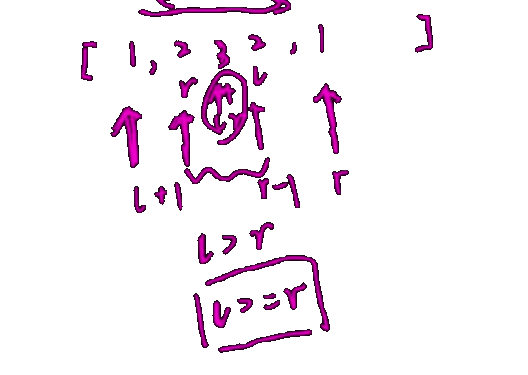

234 回文链表
请判断一个单链表是否回文链表。
示例 1：
1 | 输入：1 -> 2 |
示例 2：
1 | 输入：1 -> 2 -> 2 -> 1 |
示例 3：
1 | 输入：1 -> 2 -> 3 -> 2 -> 1 |
进阶：你能否用 $O(n)$ 时间复杂度和 $O(1)$ 空间复杂度解决此题？
双指针法
两个指针分别从头部和尾部开始遍历数组，一一对比。

实现步骤：
将链表转为数组；
将两个指针分别遍历数组的开头和结尾，往中间走；
如果指针指向的数据不相等，则返回 false；
返回true；
算法效率：
- 需要用到数组，空间复杂度是 $O(n)$；
Java 代码：
递归法
栈
快慢指针
快慢指针的思想是，有一 快一慢两指针，慢指针没走一步，快指针走两步，这样子的当慢指针到达链表中间位置时候，快指针就到了尾部。这时候把快指针指向链表头部，慢指针和后面的链表反转。然后进行对比。